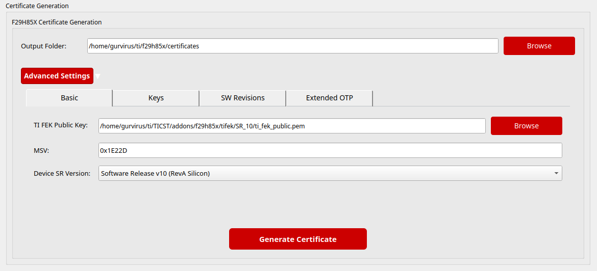
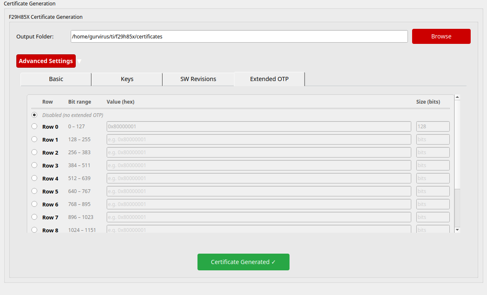

3 : Certificate Generation
This section describes the process for generating certificates required for secure provisioning of devices.
Note
OpenSSL 3.0.2 (March 2022) or newer is required for certificate generation.
Check your OpenSSL version by running
openssl versionat the command prompt.
3.1 Certificate Overview
Certificates are required to securely provision keys and other security parameters to devices. The TI Cybershield Toolkit uses X.509 certificates with specialized extensions to securely transfer key material and other security parameters to the device.
The certificate generation process:
Takes Secondary Manufacturer keys (SMPK/SMEK) as input
Encrypts the sensitive portions with the TI Field Encryption Key (TI FEK)
Creates a signed X.509 certificate that contains the encrypted key material
Packages the certificate in a format suitable for device provisioning
Note
The maximum certificate size supported by the OTP keywriter firmware is 8192 bytes.
3.2 Certificate Generation Process
The certificate generation process follows these steps:
Generate a cryptographically secure true random 256-bit AES encryption key
Note
The AES key is generated using a cryptographically secure True Random Number Generator (TRNG). This satisfies FIPS 140-2/3 requirements for random number generation, as confirmed during TUV audit.
Use this AES-256 key to encrypt all X.509 extension fields requiring protection
Create X.509 extensions using the TI FEK (public key): * Encrypt the AES-256 key with the TI FEK * Sign the AES-256 key with the SMPK, then encrypt with the TI FEK * (Optional) Sign the AES-256 key with the BMPK, then encrypt with the TI FEK
Combine these extensions into an X.509 configuration
Sign the certificate using the SMPK (private key)
(Optional) For backup keys, sign with the BMPK (private key)
Note
Which key signs the X.509 certificate?
The X.509 certificate is signed by the customer’s Secondary Manufacturer Private Key (SMPK private). The TI FEK is not used to sign the certificate itself — it is used only to encrypt the AES key within the certificate extensions, protecting the customer key material from all parties except TI’s HSM firmware.
3.3 Using the GUI for Certificate Generation
Note
Addon detected — TI FEK auto-configured: If the Security Addon is installed, the correct TI FEK public key for your selected device is automatically detected and pre-configured. Please verify the correct SR version is selected for the TIFEK (SR_10 for Rev 0/Rev A users and SR_20 for Rev B/Rev C Users). See Security Addon Installation for setup instructions.
The certificate generation process is integrated into the GUI workflow:
Launch the GUI application by running the
cstguicommand in the terminal (see Installation Guide for setup)Navigate to the “Device & Key Selection” page
Select the device type and key type
Navigate to the Certificate Generation section. Configure the following parameters:
MSV (Model Specific Value): Customer-defined value (hexadecimal, e.g.,
0x1E22D)Software Revisions: Set sr_sbl, sr_hsmRT, sr_app, sr_ssu to the appropriate values (typically
1for initial provisioning)Key Count: Select
1(SMPK only) or2(SMPK + BMPK)Key Revision: Select
1(use SMPK) or2(use BMPK) for the active signing key
Configure Advanced Settings if needed:
TI FEK Public Key: Set only if the secure binaries addon is not installed (see note below)
Device SR Version: Must match your silicon revision (
SR_10for Rev A,SR_20for Rev B and Rev C)Key protection options: Check
Enable Write Protectionfor SMPK/SMEK/BMPK/BMEK to prevent future key modification
Click Generate Certificate and specify the output file path
The generated certificate will be stored in the location specified during the process.
Important
About the TI FEK Public Key:
The TI Field Encryption Key (TI FEK) is owned and controlled exclusively by Texas Instruments. The FEK public key is embedded within TI’s HSM firmware binary and is fixed for a given device family — customers do not generate their own FEK.
If the secure binaries addon is installed, the correct TI FEK public key is automatically detected and pre-configured for the selected device. No manual action is needed.
The actual production FEK public key path must be set in Advanced Settings → Basic → TI FEK Public Key to match the key embedded in your HSM binary (obtained from TI).
{kind=link}

To configure a custom TI FEK Public Key:
In the Certificate Generation tab, click Advanced Settings
Navigate to the Basic tab
Update the TI FEK Public Key field with the path to your HSM-specific public key
Configure other parameters as needed (MSV, Device SR Version)
Proceed with certificate generation
Important
Device Revision-Specific Configuration:
Rev B and Rev C Devices: Users with Rev B or Rev C silicon must ensure the Device SR Version in the Advanced Settings is
SR_20. Additionally, you must use the Rev B/C-specific OTP Keywriter binary during provisioning. Refer to the SBL Keywriter documentation for details on selecting the correct binary for your device revision.Note
The secure binaries addon as part of 26.00.00_STS includes only the SR_10 (Rev A) OTP Keywriter binary.
Rev B/C users must obtain the SR_20-specific binary from the SBL Keywriter package. Contact a TI representative for more information.
Rev 0 and Rev A Devices: Users with Rev 0 or Rev A silicon must ensure the Device SR Version in the Advanced Settings is
SR_10.
3.4 Using the CLI for Certificate Generation
The gencert subcommand is invoked via cst --device f29h85x gencert. The key source
is specified via global flags before gencert — either a session or signing algorithm flags:
Option A — Using a session:
cst --device f29h85x --session SESSION_NAME --password PASSWORD gencert \
-t PATH_TO_TIFEK_PUB \
--msv 0x1E22D --msv_protect \
--smpk --smek --s_protect --smek_protect \
--bmpk --bmek --b_protect --bmek_protect \
--sr_sbl 1 --sr_hsmRT 1 --sr_app 1 --sr_ssu 1 \
--keycnt 2 --keycnt_protect --keyrev 1 \
-d f29h85x --devSrVer SR_10
Option B — Using signing algorithm flags:
cst --device f29h85x --smpk_signing_algorithm rsa4k --bmpk_signing_algorithm rsa4k gencert \
-t PATH_TO_TIFEK_PUB \
--msv 0x1E22D --msv_protect \
--smpk --smek --s_protect --smek_protect \
--bmpk --bmek --b_protect --bmek_protect \
--sr_sbl 1 --sr_hsmRT 1 --sr_app 1 --sr_ssu 1 \
--keycnt 2 --keycnt_protect --keyrev 1 \
-d f29h85x --devSrVer SR_10
Example (Rev A, SR_10, using a session):
cst --device f29h85x --session MySession --password securePassword gencert \
-t ~/ti/TICST/addons/f29h85x/tifek/SR_10/ti_fek_public.pem \
--msv 0x1E22D --msv_protect \
--smpk --smek --s_protect --smek_protect \
--bmpk --bmek --b_protect --bmek_protect \
--sr_sbl 1 --sr_hsmRT 1 --sr_app 1 --sr_ssu 1 \
--keycnt 2 --keycnt_protect --keyrev 1 \
-d f29h85x --devSrVer SR_10
Common parameters:
--device: Target device (global flag, beforegencert; e.g.f29h85x)--session: Session name for key access (Option A; global flag)--password: Session password (Option A; global flag)--smpk_signing_algorithm: SMPK signing algorithm (Option B; global flag, e.g.rsa4k)--bmpk_signing_algorithm: BMPK signing algorithm (Option B; global flag, e.g.rsa4k)-t, --tifek: Path to the TI FEK public key (required). If the Security Addon is installed, the correct key is included in the addon at~/ti/TICST/addons/f29h85x/tifek/for both SR_10 (Rev A) and SR_20 (Rev B/Rev C) — select the key matching your device revision.-d, --device: Device type passed to thegencertsubcommand (e.g.f29h85x)--devSrVer: Device security revision (SR_10for Rev A,SR_20for Rev B/C)--msv: Model Specific Value (hexadecimal)--msv_protect: Enable write protection for MSV--smpk/--smek: Include SMPK/SMEK in certificate--s_protect/--smek_protect: Enable write protection for SMPK/SMEK--bmpk/--bmek: Include backup BMPK/BMEK in certificate (optional)--b_protect/--bmek_protect: Enable write protection for BMPK/BMEK--sr_sbl,--sr_hsmRT,--sr_app,--sr_ssu: Software revision values--keycnt: Number of key sets (1or2)--keycnt_protect: Enable write protection for key count--keyrev: Active key revision (1or2)
3.5 Certificate Contents
The certificate contains the following key components:
SMPK (Secondary Manufacturer Private Key): Used for image authentication
SMEK (Secondary Manufacturer Encryption Key): Used for image decryption
BMPK/BMEK (Backup Secondary Manufacturer Keys): Optional backup keys
Configuration Fields: Various device configuration parameters: * KEY_COUNT: Number of key sets provisioned (1 or 2) * KEY_REVISION: Current active key revision (1 or 2) * SWREV fields: Software revision values for various components * MSV (Model Specific Value): Customer-specific value
3.6 Extended OTP Configuration
The certificate optionally carries Extended OTP data that is permanently programmed into the device’s extended One-Time-Programmable memory during key provisioning. This is an opt-in feature — leave it disabled if you do not need it.
Warning
Extended OTP is permanently programmed into the device at provisioning time and cannot be erased or modified after the keywriter runs. Verify all values carefully before generating the certificate.
3.6.1 Extended OTP Memory Layout
The F29H85x extended OTP region is 1664 bits total, organised as 13 rows of 128 bits each:
Row 0 → bit offset 0 – 127
Row 1 → bit offset 128 – 255
Row 2 → bit offset 256 – 383
...
Row 12 → bit offset 1536 – 1663
Only one row can be selected per certificate. The region is identified by a starting bit index (derived automatically from the selected row) and a size in bits that you supply. Both the index and size must be multiples of 8 and the size must be at least 32 bits.
3.6.2 Using the GUI for Extended OTP
The GUI exposes the Extended OTP feature through the Extended OTP tab inside the Advanced Settings collapsible section on the Certificate Generation panel.
{kind=link}

Step-by-step:
On the Device & Key Selection page, select your device and complete key setup.
Scroll to the Certificate Generation section and click Advanced Settings to expand it.
Select the Extended OTP tab. The table displays all 13 rows with their corresponding bit-address ranges.
By default, Disabled (no extended OTP) is selected. If you do not need extended OTP, leave this option selected.
To program a row, click the radio button next to it. The Value (hex) and Size (bits) fields for that row become editable; all other rows remain grayed out.
Fill in the two active fields:
Value (hex) — The data to program into the selected OTP row, as a hexadecimal string (e.g.
0x80000001). Must be a valid hexadecimal number.Size (bits) — The number of bits from the row to program. Rules:
Must be a whole integer.
Minimum: 32 bits.
Must be a multiple of 8 (byte-aligned).
Use
128to program the full row width.Use a smaller value (e.g.
32) when only a subset of the row carries meaningful data — bits beyond the specified size are left unprogrammed.
Click Generate Certificate. The extended OTP parameters are embedded in the certificate and programmed to the device during key provisioning.
The GUI computes the bit index automatically as row_number × 128 and passes
ext_otp, ext_otp_indx, and ext_otp_size to the certificate tool.